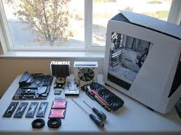

Steps to build your own Personale Computer

- Tools-All the tools you need, if any, is a standard Phillips-head screwdriver.
- Open the case-Unscrew the crews on either side of the case to open both sides up.
- Install the CPU-Remove the CPU from its protective plastic. Do NOT touch the gold pins on bottom!
On the motherboard, push the cpu cover up and then the lever on the side. Place the the CPU in gently,
using the arrows to line it up correctly. Then push the CPU cover down firmly but not roughly. It will
fell quite hard. This is normal.
- Add the Heatsink-The heastsink will fit right over the processor. It has 4 screws (sometimes tool less tabs) that will have to be secured.
- Install the RAM-Unlock the clips on the RAM slots, then install the RAM modules in the appropriate slots. There is a groove in the RAM that corresponds to the slot. Push down on both sides of the module, and then replace the clips over the module. Repeat for additional modules.
- Attach the I/O Shield-Your motherboard will come with a small metal piece that fit over the ports on the motherboard. This goes in a rectangular hole in the back of the case. Simply snap it into place.
- Install the Motherboard-Place the motherboard in the case and slide it until the ports fit through the I/O shield.
- Secure the Motherboard to the Case-Your case should come with some screws. The number of screws required depends on your motherboard and case. Refer to their respective manuals for further details. Use the screws to secure the motherboard to the case. It's a good idea to put then all in loosely then secure them tight. Not too tight, otherwise you'll crack the PCB of the motherboard which... isn't good.
- Install the Graphics Card-Remove the expansion slot covers on the back of the case, and slide the graphics card into place, then push it down into the slot on the motherboard until it clicks firmly into place. Then secure with the thumbscrews
- Installing the Hard Drive-Remove the hard drive bracket from your computer. Secure it to the back of your hard drive. Slide the bracket with the hard drive back into the drive bay.
- Install the Power Supply.-Remove the thumbscrews securing the power supply bracket. Attach it to the power supply with the included screws. Then thread the cables through the case, and push the PSU until it is flush with the case. Make sure the PSU does not choke any cables.
- Attach USB 3.0 Cable-Attach USB 3.0 Cable in the blue port on the motherboard
- Attach HD Audio Cable-Attach the HD audio cable to the to the HD Audio header found in the motherbord manual.
- Connect Graphics Card Power Pins-There will be a 6-pin PCIe connector coming from your power supply. This powers your graphics card. Some graphics cards need two of these, others need none. There will be ports on the top of the graphics card.
- Connect PSU to Motherboard-There will be a 24-pin connector that powers the motherboard. Connect in in the 24 pin fimale conector on the right side of the motherboard.
- Connect Power to Hard Drive-There is a sata power cable with a protruding connector. Hook this into the hard drive. It will only fit in one way.
- Plug CPU Power Pins In-There will be a CPU power pin. It should break into 2 parts for motherboard that only use one half.
- Heatsink Power-Next is the heatsink power cord. It comes off of the heatsink itself and goes to the cpu fan header.
- Attach Case Fans to Power-The case will have a small 3 pin connector for the case fan. Hook this in the indicated spot. There will be another in the back that will need a 3-pin to molex adapter. Hook the adapter into the PSU and the other end to the 3 pin connector.
- Attach Hard Drive to Motherboard-The motherboard comes with a SATA cable. Connect one end to the hard drive and the other to the motherboard.
- Turn on PSU-Flip the switch on the PSU.
- Power On-Press the power button on the case and (hopefuly) the computer turns on
- Install OS-load the OS into a usb and boot in to it from thae bios the you can get into by pressing the F12 key.
Page-1Page-2Page-3